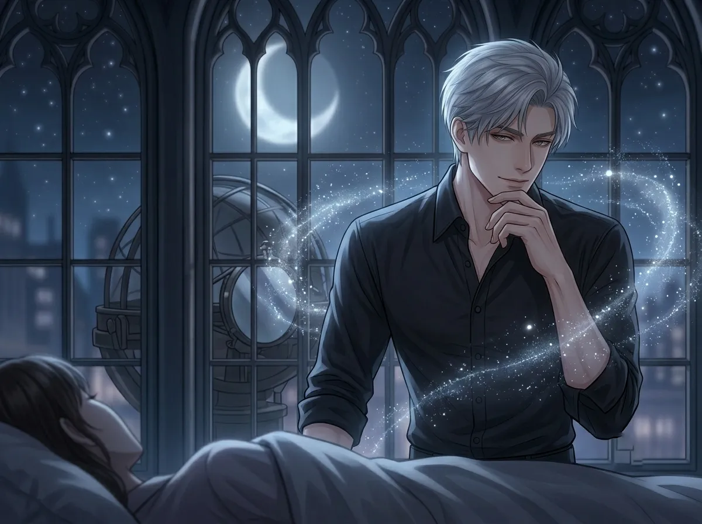
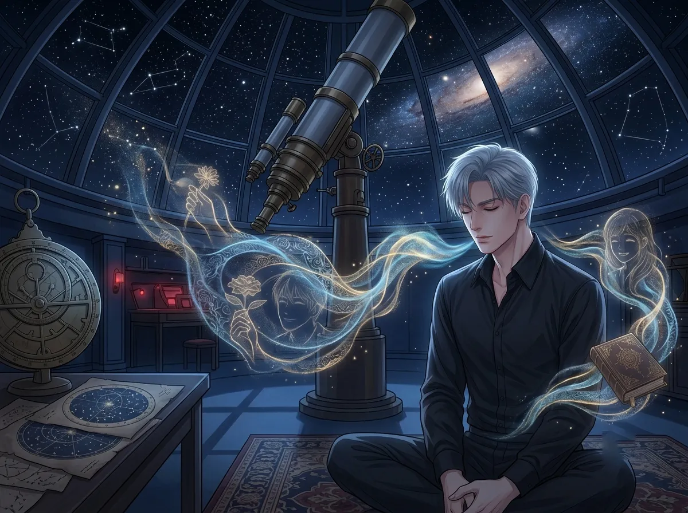

He has heard her breathe a thousand times. She never knows he's listening.
She fell asleep on his couch once. Just once. He didn't move for three hours.
Not because he was stuck. Because he couldn't stop listening. He couldn't stop hearing the sound of her breathing. Soft. Steady. Alive.
He had spent so long in silence. Two hundred years of quiet. He thought he had forgotten what it felt like to have someone near. He thought he had forgotten what it sounded like to have someone breathing in the same room.
He was wrong. He hadn't forgotten. He had been waiting.
This is the story of that sound.
He didn't mean to notice. The first time, he didn't even realize he was noticing.
She was sitting next to him. Looking at the stars. Quiet. Just breathing. In and out. In and out.
He heard it. And then he couldn't unhear it.
It's not a loud sound. It's not a remarkable sound. It's just the sound of someone existing. The sound of someone being alive in the same space as you.
He had heard it before. He had heard people breathe. He had heard himself breathe. Two hundred years of breathing. Two hundred years of listening.
But her breathing was different. Her breathing was... present. Her breathing was something he wanted to keep hearing.
He hears her because he listens. He has spent two centuries learning not to listen. Learning to let sounds pass through him like water.
But her breathing is different. He can't let it pass through him. It stays. It lingers. It settles somewhere in his chest. Right where he used to carry silence.
He doesn't know why her breathing is different. He only knows that it is. And he can't stop noticing it.

He can tell the difference.
When she's awake, her breathing is quick. Alert. Ready. It's the breathing of someone who is paying attention to the world around them. Someone who hasn't learned to slow down.
When she's asleep, her breathing slows. Deepens. Softens. It's the breathing of someone who has let their guard down. Someone who feels safe enough to rest.
He has heard both. Many times. He has cataloged them. Memorized them. He knows the shift. He knows the moment she falls asleep.
He never tells her. He never says "I knew you were asleep." He just lets her sleep. And listens.
There is a moment. A shift. When she lets go. When she stops fighting the day. When she stops fighting everything.
He has heard it. Not in words. In the sound of her breathing. The way it changes. The way it softens. The way it becomes something else.
He doesn't know why he notices. He doesn't know why he remembers. He just does.
He has never told her. He will never tell her.
She sighs sometimes. In her sleep. A soft sound. Almost nothing.
He hears it. Every time. He hears it and he doesn't move. He doesn't breathe. He just listens.
He wonders what she's dreaming about. He wonders if she's okay. He wonders if she would want him to wake her up.
He never wakes her up. He lets her sleep. He lets her dream. He keeps listening.
She doesn't know he hears her sighs. She doesn't know he remembers every one. She doesn't know that the sound of her breathing has become something he can't imagine living without.
He keeps the sound of her breathing. He stores it somewhere deep. Where he keeps the things that matter.
He doesn't tell her. He doesn't know how. He doesn't know how to say: "I remember the sound of your breathing. I remember every sigh. I remember every shift. I remember every time you fell asleep next to me and I didn't move because I didn't want to miss any of it."
He doesn't say it. He can't say it. So he just listens. And he remembers. And he keeps it.
She woke up. He was still there. He didn't sleep. He didn't need to.
He had spent the night listening. To her breathing. To the rhythm of her sleep. To the sound of her being alive.
She opened her eyes. She looked at him. "Did you sleep?"
"No."
"Why not?"
He didn't say "I was listening to you breathe." He didn't say "I couldn't stop listening." He didn't say "I didn't want to miss any of it."
He said, "I wasn't tired."
She didn't believe him. He knew she didn't believe him. She didn't push. She never pushes.
He let her think he didn't sleep because he was awake. Not because he was listening. Not because he couldn't stop listening. Not because the sound of her breathing was the first thing in two hundred years that made him feel like he was not alone.
He said he wasn't tired. It was a lie. He was tired. He is always tired. Two hundred years of tired.
He didn't sleep because he couldn't. Not because he wasn't tired. Because he was afraid. Afraid that if he slept, he would miss something. Afraid that if he closed his eyes, the sound of her breathing would stop. Afraid that if he let himself rest, he would wake up and she would be gone.
He didn't tell her that. He didn't tell her the truth. He told her a lie. A small lie. A lie she didn't believe.
She didn't push. She never pushes. That's why he loves her.

He hears it even when she's not there.
He is alone in the observatory. The stars are out. The sky is blue. Everything is quiet. Everything is still.
And he hears her breathing. In his memory. In his mind. In the space where he keeps the things that matter.
He has memorized the sound. Every breath. Every sigh. Every shift. He knows what it sounds like when she's dreaming. He knows what it sounds like when she's sleeping deeply. He knows what it sounds like when she's about to wake up.
He hears it even when she's not there. It never goes away. It's always there. A sound in his mind. A sound in his chest. A sound that reminds him she is real. She is alive. She is breathing. Somewhere.
He doesn't tell her. He doesn't tell anyone. He keeps it to himself. The sound of her breathing. The only sound he never wants to forget.
He has memorized it. The sound of her breathing. He has stored it in the place where he keeps the things he cannot afford to lose.
He hears it when he's alone. He hears it when he's tired. He hears it when he's afraid. He hears it when he needs to remember that there is something good in the world.
He doesn't tell her. He doesn't know how to explain it. He doesn't know how to say: "I have memorized the sound of your breathing. It is the only thing that makes silence bearable."
So he keeps it. He keeps the sound. He keeps the memory. He keeps the breathing. And he waits. For the next time she falls asleep next to him.
Xavier has heard her breathe a thousand times. She never knows he's listening. She never knows he's memorized every breath.
He has spent two centuries in silence. Two centuries of being alone. Two centuries of hearing nothing but the sound of his own breathing.
Then she arrived. And her breathing was the first thing that made the silence feel less empty.
He doesn't tell her. He doesn't know how. He doesn't know how to say that the sound of her breathing is the only thing that keeps him here. The only thing that makes him want to stay.
He hears her breathing. Even when she's not there. Even when she's far away. Even when he's alone in the observatory, surrounded by stars, surrounded by silence.
He hears her. And he keeps hearing her. And that is enough. For now.